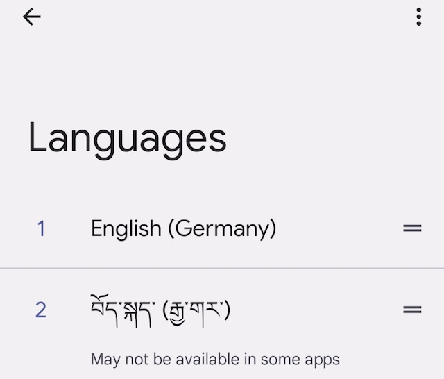

Android and Tibetan
Contents
Android and Tibetan#
Warning
Installing a third-party keyboard on Android is a significant security risk! Do not install keyboard from unknown or untrusted sources. Once a keyboard is installed, the producer of that keyboard has basically potentially access to everything you do on your mobile device.
{kind=link}
Android comes with Tibetan fonts preinstalled. In order to work with Tibetan, simply add a Tibetan keyboard.
{kind=link}
The recommended keyboard is Google’s Gboard Keyboard that allows adding a vast array of different input methods.
Once gboard is installed, go to Settings, System, Languages and input and select the Gboard keyboard.
In Add a language, select བོད་སྐད་ (Tibetan) and select the preferred sub-type, རྒྱ་གར་ (India) or རྒྱ་ནག་ (China).
{kind=link}
Now, using the globe (🌐) icon on the on-screen keyboard, you can switch between different input methods.
There are two ways to stack, start from top, and any letter that should be stacked below can be entered by long-press or via <shift>. E.g. to enter རྒྱུ, press ར, (long-press)ག, (long-press)ཡ, and ུ. Alternatively use <shift> instead of long-pressing the letters.
Next steps#
Now you are ready to install some Tibetan apps!